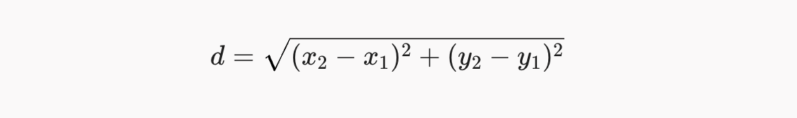

Повторення: списки та словники
Повторення: списки та словники
List (список)
Коли використовувати list? Коли потрібна впорядкована колекція, яка може змінюватись: елементи можна додавати, видаляти, сортувати, і вони можуть повторюватись. Наприклад: список оцінок [7, 9, 5] або англійські слова для вивчення.
Завдання 1: List
Дано список оцінок:
scores = [7, 9, 5, 10, 8]- Додай до списку оцінку 6 (за допомогою методу append).
-
Виведи:
- найбільшу оцінку (max);
- середнє арифметичне всіх оцінок (sum, len);
- список оцінок, відсортований за зростанням (sorted(list)).
🐍 Очікуваний результат:
10
7.5
[5, 6, 7, 8, 9, 10]Dictionary (словник)
Коли використовувати dict? Коли кожному значенню відповідає своя "назва" (ключ) і треба швидко знаходити значення за нею: ціни товарів {"apple": 20}, оцінки учнів за іменами, переклад слів.
Завдання 2: Dict
Дано словник цін:
prices = {"apple": 20, "pear": 35}Додай "plum": 28, зміни ціну яблука на 22, потім циклом виведи кожен товар з ціною і знайди загальну суму.
- додай сливу ("plum") із ціною 28;
- зміни ціну яблука на 22 (через доступ за ключем dict[key] = new_value);
- за допомогою циклу for key, value in dict.items() виведи кожен товар і його ціну;
- виведи суму всіх цін (можна порахувати в тому самому циклі).
🐍 Очікуваний результат:
apple 22
pear 35
plum 28
Разом: 85
 Кортежі та множини
Кортежі та множини
Tuple (кортеж)
Кортеж (tuple) — це список, який не можна змінювати після створення. Записується в круглих дужках замість квадратних.
point = (3, 4)
print(point[0]) # 3
print(len(point)) # 2
point[0] = 5 # TypeError: 'tuple' object does not support item assignmentКорисні речі:
- Розпакування: x, y = point дає x = 3 та y = 4.
- Повернення кількох значень з функції: return a, b насправді повертає кортеж.
- Кортеж з одного елемента потребує коми: (5,). Без коми (5) — це просто число у дужках.
❓ Що виведе цей код?
def min_max(numbers):
return min(numbers), max(numbers)
print(min_max([1, 2, 3]))
lowest, highest = min_max([8, -4, 15, 32, 7])
print(lowest)
print(highest)
print(type((5)))
print(type((-5)))Коли використовувати tuple? Коли набір значень — це "одна річ" і не має змінюватись: координати точки (x, y), rgb-колір (255, 0, 0), дата (2026, 11, 13).
Завдання 3: Відстань між точками
Дано дві точки на площині:
A = (1, 2)
B = (4, 6)- Розпакуй кожну точку у змінні x1, y1 та x2, y2.
-
Обчисли відстань між точками за формулою:

- Спробуй написати A[0] = 10 і прочитай повідомлення про помилку. Що саме там сказано?
🐍 Очікуваний результат: 5.0, а потім помилка TypeError.
Завдання 4: Функція, що повертає кортеж
-
Напиши функцію
stats(numbers), яка
приймає список і повертає
кортеж із трьох чисел:
- мінімум;
- максимум;
- середнє арифметичне.
- Виклич її для списку [4, 8, 15, 16, 23, 42].
🐍 Очікуваний результат:
4 42 18.0Множина (set)
Множина (set) — це набір унікальних невпорядкованих елементів. Записується у фігурних дужках.
s = {1, 2, 2, 3, 3, 3}
print(s) # {1, 2, 3}, дублікати зниклиОсновне:
- len(s) та x in s працюють, як у списку (причому перевірка in у множині працює значно швидше!).
- Немає індексів: s[0] видає помилку, бо в множини немає порядку.
- Додати елемент: s.add(5).
- Видалити елемент: s.discard(5) (без помилки, якщо елемента немає) або s.remove(5) (помилка, якщо немає).
- Порожня множина: set(), а не {} (бо {} — це порожній словник!).
-
Як швидко прибрати дублікати зі списку:
names = ["Sam", "Nick", "Sam"] unique_names = list(set(names)) print(unique_names) # ["Sam", "Nick"] (порядок може бути іншим)
Операції над множинами (як у математиці):
A = {1, 2, 3, 4, 5, 6}
B = {2, 4, 6, 8}
print(A | B) # об'єднання (усі елементи з обох): {1, 2, 3, 4, 5, 6, 8}
print(A & B) # перетин (спільні елементи): {2, 4, 6}
print(A - B) # різниця (є в A, але немає в B): {1, 3, 5}
print(A ^ B) # симетрична різниця (лише в одній): {1, 3, 5, 8}❓ Що виведе цей код?
print(len({1, 2, 2, 3, 3, 3}))
print(type({}))
print(type(set()))Сортування:
sorted(s) працює і з множиною, але завжди повертає новий список (у множини немає порядку, а в списку є). Сама множина при цьому не змінюється. Так само sorted() поверне список, якщо передати кортеж, рядок чи словник (для словника — відсортований список ключів).
s = {5, 1, 3}
result = sorted(s)
print(result) # [1, 3, 5] (це список, а не множина)
print(type(result)) # <class 'list'>Коли використовувати множини? Коли важливо лише "чи є такий елемент" та "скільки різних", а порядок і повтори не потрібні: унікальні відвідувачі сайту, множина простих чисел в межах від 1 до 50, спільні дільники чисел 12 та 18.
Завдання 5: Унікальні значення
Дано результати кидків грального кубика:
rolls = [3, 5, 3, 6, 1, 5, 5, 2, 6, 3]- Виведи, які різні значення випали (відсортуй за зростанням).
- Виведи, скільки всього різних значень випало.
- Виведи, які грані кубика (від 1 до 6) жодного разу не випали. (Підказка: використай set(range(1, 7)) і різницю множин.)
🐍 Очікуваний результат:
[1, 2, 3, 5, 6]
5
{4}
Завдання 6: Спільні дільники
- Напиши функцію divisors(n), яка повертає множину всіх дільників числа n. (Використай цикл від 1 до n та оператор остачі %.)
- Знайди всі спільні дільники чисел 12 і 18 за допомогою цієї функції та перетину множин.
- Знайди найбільший спільний дільник цих двох чисел.
🐍 Очікуваний результат:
Дільники 12:
{1, 2, 3, 4, 6, 12}
Дільники 18:
{1, 2, 3, 6, 9, 18}
Спільні дільники 12 і 18:
{1, 2, 3, 6}
НСД:
6
 Незмінні та змінні типи даних
Незмінні та змінні типи даних
Mutable vs. Immutable
В Python типи даних можна поділити на незмінні (immutable) та змінні (mutable).
- Незмінні: int, float, str, tuple, bool. Після створення їх вміст не міняється. Будь-яка "зміна" створює новий об'єкт в памʼяті компʼютера.
- Змінні: list, dict, set. Їх вміст можна змінювати "на місці" без створення нового об'єкта (наприклад, через індекси та ключі, або за допомогою методів append(), add(), тощо).
# незмінюваний: int
x = 5
y = x
y = y + 1
print(x, y) # 5 6 (x не змінився)
# незмінюваний: string
word = "hello"
# word[0] = "H" # видасть помилку TypeError
print(word.upper()) # HELLO (це НОВИЙ рядок)
print(word) # hello (старий рядок не змінився)
# змінюваний: list
list1 = [1, 2, 3]
list2 = list1
list2.append(4)
print(list2) # [1, 2, 3, 4]
print(list1) # [1, 2, 3, 4] (цей список теж змінився)❓ Що виведе цей код?
vowels_1 = {"a", "e", "i", "o", "u", "y"}
vowels_2 = vowels_1
vowels_2.remove("y")
print(sorted(vowels_1))
print(sorted(vowels_2))Створення справжньої копії:
a = [1, 2, 3]
b = a.copy()
b.append(4)
print(a) # [1, 2, 3] (без змін)Передача mutable даних функції:
def add_zero(lst):
lst.append(0) # змінює оригінальний список
nums = [1, 2]
add_zero(nums)
print(nums) # [1, 2, 0]Передача immutable даних функції:
def add_one(n):
n = n + 1 # змінює лише локальну змінну
k = 5
add_one(k)
print(k) # 5Ще один важливий зв'язок: ключами словника можуть бути лише незмінні об'єкти (наприклад, кортежі з координатами, але не списки):
treasure = {(0, 0): "start", (2, 3): "chest"} # працює: ключі-кортежі
bad = {[0, 0]: "start"} # TypeError: unhashable type: 'list'Завдання 7: Фільтр чисел
Дано множину чисел від 1 до 10:
numbers = set(range(1, 11))- Напиши функцію without_multiples(numbers, k), яка повертає нову множину без чисел, кратних k. Початкова множина не повинна змінитись.
- Отримай множину no2 (це numbers без парних чисел).
- Знайди різницю цил множин (які саме числа зникли з початкового списку).
🐍 Очікуваний результат (порядок чисел в множинах може відрізнятися):
numbers:
{1, 2, 3, 4, 5, 6, 7, 8, 9, 10}
no2:
{1, 3, 5, 7, 9}
Видалені парні числа:
{2, 4, 6, 8, 10}Підсумок
| list | tuple | set | dict | |
|---|---|---|---|---|
| Приклад | [1, 2, 3] | (1, 2, 3) | {1, 2, 3} | {"a": 1, "b": 2} |
| Порожній | [] | () | set() | {} |
| Змінюваний (mutable) | так | ні | так | так |
| Зберігає порядок | так | так | ні | так (порядок додавання) |
| Повтори | можуть бути | можуть бути | ні, лише унікальні елементи | ключі унікальні, значення можуть повторюватись |
| Доступ до елемента |
за індексом a[0] |
за індексом a[0] |
немає індексів, лише перевірка x in s |
за ключем d["a"] |
| Може бути ключем словника | ні | так (якщо всередині немає списків) | ні | ні |
| Коли обирати | впорядкована колекція, яка змінюється | фіксована "одна річ": координати, колір, дата | унікальні елементи, операції над множинами (| & -) | пари "назва → значення", швидкий пошук за ключем |